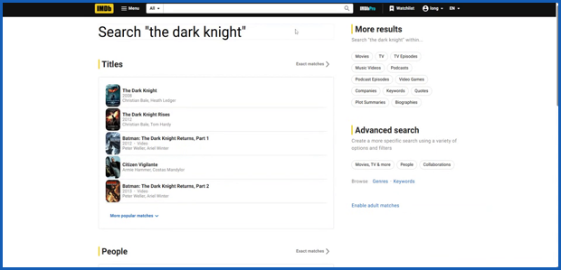
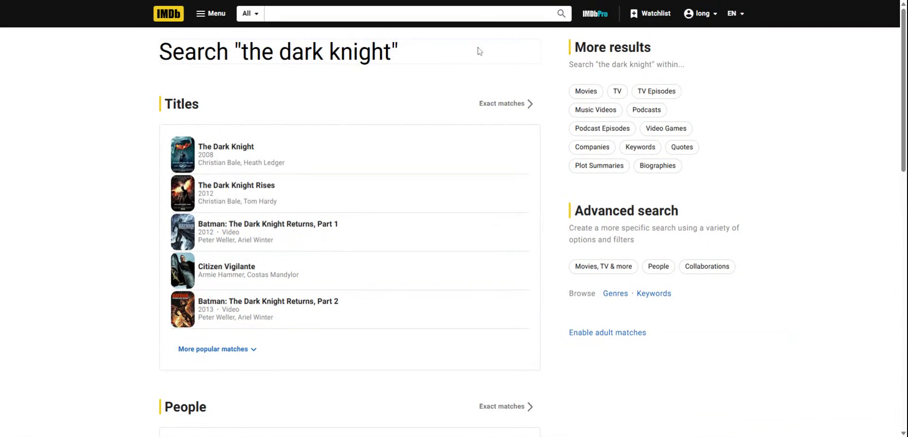
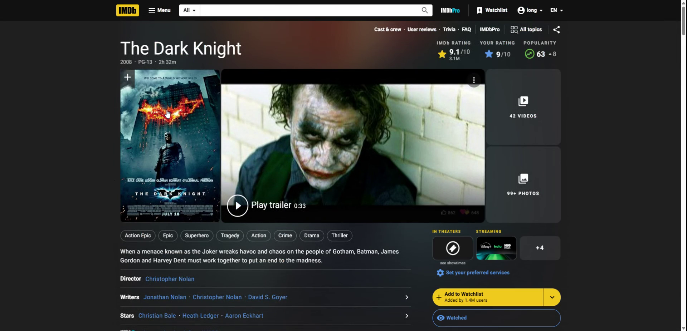
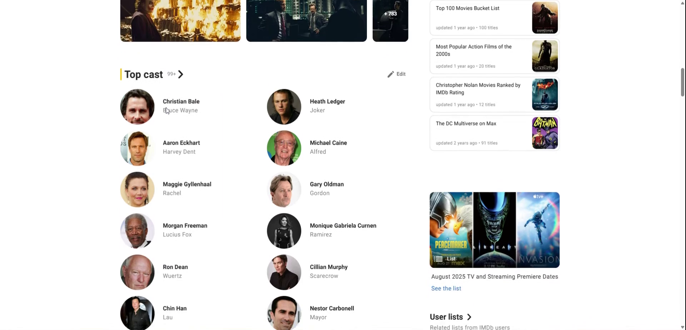
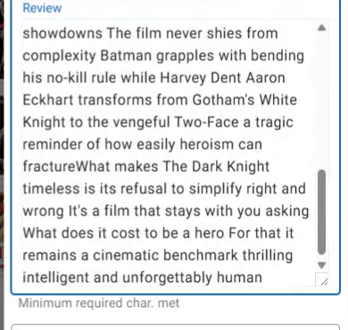
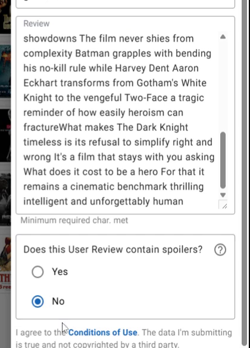

screenshot_0 · full
[1920, 926] → [1920, 926] · 保留像素 100.0% · 场景 0


坐标：[0, 0, 1920, 926] · 原因：first_screenshot
算法版本：experimental_theme_aware_per_step_v2。仅用于预览，生成流程未修改。
返回任务总览 · 查看全部步骤拼图 · 查看算法判断 JSON
左侧为原图预览和选区（绿色：裁剪；蓝色：保留整图），右侧为此算法的输出预览；实验版尚未用于生成。点击图片查看原尺寸；预览自动缩放。像素减少比例不等于 token 减少比例。
[1920, 926] → [1920, 926] · 保留像素 100.0% · 场景 0
坐标：[0, 0, 1920, 926] · 原因：first_screenshot
[1920, 926] → [1300, 660] · 保留像素 48.3% · 场景 0
坐标：[295, 0, 1595, 660] · 原因：localized_change
[1920, 926] → [1920, 926] · 保留像素 100.0% · 场景 0
坐标：[0, 0, 1920, 926] · 原因：changes_spread_keep_full
[1920, 926] → [1920, 926] · 保留像素 100.0% · 场景 1
原图与选区

算法输出预览

坐标：[0, 0, 1920, 926] · 原因：large_visual_change
[1920, 926] → [1920, 926] · 保留像素 100.0% · 场景 2
算法输出预览

坐标：[0, 0, 1920, 926] · 原因：large_visual_change
[1920, 926] → [1920, 926] · 保留像素 100.0% · 场景 3
坐标：[0, 0, 1920, 926] · 原因：large_visual_change
[1920, 926] → [1920, 926] · 保留像素 100.0% · 场景 4
坐标：[0, 0, 1920, 926] · 原因：large_visual_change
[1920, 926] → [1920, 926] · 保留像素 100.0% · 场景 4
算法输出预览

坐标：[0, 0, 1920, 926] · 原因：changes_spread_keep_full
[1920, 926] → [1920, 926] · 保留像素 100.0% · 场景 4
坐标：[0, 0, 1920, 926] · 原因：changes_spread_keep_full
[1920, 926] → [1920, 926] · 保留像素 100.0% · 场景 5
坐标：[0, 0, 1920, 926] · 原因：large_visual_change
[1920, 926] → [839, 605] · 保留像素 28.5% · 场景 5
坐标：[1081, 222, 1920, 827] · 原因：localized_change
[1920, 926] → [420, 190] · 保留像素 4.5% · 场景 5
坐标：[1500, 222, 1920, 412] · 原因：localized_change
[1920, 926] → [139, 69] · 保留像素 0.5% · 场景 5
坐标：[1514, 329, 1653, 398] · 原因：localized_change
[1920, 926] → [420, 459] · 保留像素 10.8% · 场景 5
坐标：[1500, 299, 1920, 758] · 原因：localized_change
[1920, 926] → [390, 370] · 保留像素 8.1% · 场景 5
算法输出预览

坐标：[1514, 402, 1904, 772] · 原因：localized_change
[1920, 926] → [427, 816] · 保留像素 19.6% · 场景 5
坐标：[1493, 25, 1920, 841] · 原因：localized_change
[1920, 926] → [420, 585] · 保留像素 13.8% · 场景 5
算法输出预览

坐标：[1500, 218, 1920, 803] · 原因：localized_change
[1920, 926] → [1920, 926] · 保留像素 100.0% · 场景 5
坐标：[0, 0, 1920, 926] · 原因：changes_spread_keep_full